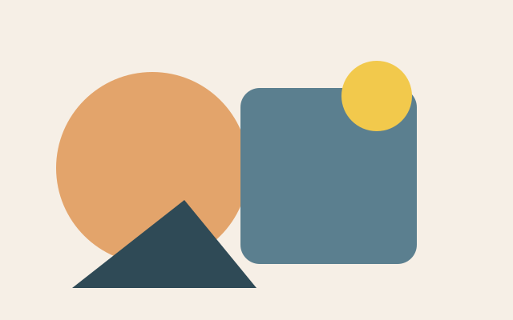

Exactly the reading light I wanted
Reaches over the armchair without being in the way. The shade gives a soft, warm light.



Table lamps
€ 89 € 119 −25%
Rated 4.7 out of 5 from 38 reviews
A brass arm that bends over a desk or a reading chair, with a linen shade that softens the light. Made to order in a small workshop.
The Arc grew out of a lamp we made for our own workbench: we wanted light that reaches over the work without a clamp. The arm is a single brass tube, bent by hand and balanced by a solid base.
| Height | 52 cm |
|---|---|
| Reach of the arm | 38 cm |
| Shade diameter | 24 cm |
| Weight | 2.4 kg |
| Bulb | E27, up to 40 W (not included) |
Exactly the reading light I wanted
Reaches over the armchair without being in the way. The shade gives a soft, warm light.
Heavier than expected, in a good way
The base keeps it steady. I'd have liked a longer cord for my desk.